| < BACK | Make Note | Bookmark | CONTINUE > |
Tkinter Widgets
The typical Tkinter distribution contains a basic set of 15 widgets, and some extra classes.
The Tkinter reference that I present in this chapter only shows a small set of methods and attributes for each one of the available widgets. This list is provided just to give you some idea of what you can do with each one of the widgets, and it is doesn't have the intention to be a complete guide. If you need to go further in this topic, I suggest you look at the Tkinter resources pages that I list at the end of this chapter.
Widget Standard Options
Almost all widgets have access to a set of standard attributes that define special characteristics for each one of them, including color definitions and font types. The value for each one of these attributes can be determined at the creation time as
mylabel = Label(win, width=40)
Or, if you prefer, you can also define (or change) the values at the execution time using the configure method.
mylabel.configure(width=40)
The previous examples use key/value pairs to define the attribute values, but you can also use dictionaries to easily inform multiple attributes at once.
mysize = { "height"=2, "width"=40}
mylabel.configure(mysize)
Support for using dictionaries here is really for backward compatibility for programs written before Python 1.4 (which didn't support keyword arguments). It is not a good idea to use it with the latest versions of Python. The third way of changing properties is with
mylabel['height'] = 2
Next, I list common properties that are defined for all Tkinter widgets.
height
In buttons, labels, and text widgets, this attribute defines the height in number of characters. In all other widgets, it defines the height in pixels.
width
In buttons, labels, and text widgets, this attribute defines the width in number of characters. In all other widgets, it defines the width in pixels.
background(bg) and foreground(fg)
These attributes define the background and foreground (text) colors for a specific widget. It can be either a color name or a explicit hexadecimal notation RGB starting with #. It is usually used in one of the following formats: "#RRGGBB", "#RGB", and "#RRRRGGGGBBBB", depending on the number of colors allowed by your system.
If you are using either a Windows or a Macintosh system, the table that contains the available color names is already built into your system.
The following constants define the system colors that you can use within your Windows system.
SystemActiveBorder, SystemActiveCaption, SystemAppWorkspace, SystemBackground, SystemButtonFace, SystemButtonHighlight, SystemButtonShadow, SystemButtonText, SystemCaptionText, SystemDisabledText, SystemHighlight, SystemHighlightText, SystemInactiveBorder, SystemInactiveCaption, SystemInactiveCaptionText, SystemMenu, SystemMenuText, SystemScrollbar, SystemWindow, SystemWindowFrame, SystemWindowText.
Note that you can change the colors at any time by editing the control panel settings.
The same concept goes for Mac systems. The available list of color names for the Macintosh platform is as follows:
| SystemButtonFace | SystemMenuActive |
| SystemButtonFrame | SystemMenuActiveText |
| SystemButtonText | SystemMenuDisabled |
| SystemHighlight | SystemMenuText |
| SystemHighlightText | SystemWindowBody |
| SystemMenu |
On the other hand, if you are using a UNIX X windowing system, the table of color names is located in a file called xrgb.txt, which contains a list of color names and their corresponding RGB values, defined by the X Server.
relief
This attribute defines the style of a widget's border. All Tkinter widgets have a border, which might not be visible by default for some widgets. This attribute accepts the following values: SUNKEN, RIDGE, RAISED, or GROOVE for 3D appearance; and FLAT or SOLID for 2D appearance.
Tip
The border of a widget consists of a 3D relief and a focus highlight region (in most cases, this is a border outside the relief).
Highlight Settings
These attributes control the process of indicating whether a widget has the keyboard focus.
highlightcolor defines the color used to draw the highlight region when the widget has the keyboard focus.
highlightbackground defines the color used to draw the highlight region when the widget doesn't have the keyboard focus.
highlightthickness defines the width of the highlight region, in pixels.
borderwidth (bd)
This attribute defines the width of a widget relief border in number of pixels.
text
This attribute contains the widget caption text, using the foreground and font values to format it.
justify
This attribute defines how multiple lines of a text caption must line up. It can assume one of the following values: LEFT, CENTER, or RIGHT.
font
In certain widgets that support caption text, you can specify the font that you want to format the text with. The font specification must be in a valid tuple format that must contain the font family name, the font size, and a string listing the font styles that you want to apply (bold, italic, underline, and overstrike), as you can see in the following code example:
w1 = Tkinter.Label(root, text="Hello Python World", font=("Symbol", 8,
"italic"))
w2 = Tkinter.Label(root, text="Hello Python World", font=("Times", 14,
"bold italic"))
w3 = Tkinter.Label(root, text="Hello Python World", font=("Symbol", 8))
The next example shows how you can use the Font class provided by the tkFont module in order to create font instances. The great advantage of this style of programming is that in case you need to make changes to a given font format, the changes are replicated to every widget in which the font is mentioned.
import Tkinter, tkFont root = Tkinter.Tk() myfont = tkFont.Font(family="times", size=18, weight=tkFont.BOLD) widget = Tkinter.Label(root, text="Hello Python World", font=myfont) widget.pack() Tkinter.mainloop()
We basically have three elements that we need to provide: The font family (name), the font size, and a list of the required style options. The font name follows the format used in Windows and X Systems, and we have at least the Times, Courier, and Helvetica families predefined. The font style options follow the specification detailed in Table 15.1.
The tkFont module also exposes the functions and methods listed in Tables 15.2 and 15.3, respectively.
| Function | Description |
|---|---|
| families() | List available font families |
| names() | List names of user-defined fonts |
You can customize your application to use platform dependent fonts, which are available on your system. For example, if you are running MS Windows, you can use Arial, Courier New, Fixedsys, MS Sans Serif, MS Serif, Symbol, System, Times New Roman, and others.
Some system fonts are also available for your usage (see Table 15.4), however, they don't allow you to change their style and size specifications. Be careful when porting applications that use system fonts because those fonts are tied to specific systems.
| Platform | System Font Examples |
|---|---|
| Windows | ansi, ansifixed, device, system, and systemfixed |
| Macintosh | application and system |
| UNIX | 6x10 and fixed |
command
This attribute associates a widget's activation with a Python function. Therefore, the function defined by this attribute is called when a specific action happens at the widget (like the click of a button).
variable
This attribute maps the widget value to a variable in such a way that all changes made to the widget are reflected to this variable, and vice versa. This variable is an instance of one of the following classes: StringVar, IntVar, DoubleVar, or BooleanVar. These classes wrap a Tcl variable, which is required to use some of the Tk interfaces. All these instances implement at least two methods: get() and set(), which can be used to obtain and define a variable's value, respectively.
image bitmap
These attributes define the image file or the bitmap file to be displayed within the widget.
anchor
This attribute defines either the location of a widget within a window, or the location of a text message within a widget. The possible values for this attribute are N, NE, E, SE, S, SW, W, NW, and CENTER.
padx pady
Defines the padding between the widget's text or the widget's image and the widget border.
cursor
This attribute defines which mouse pointer (cursor) must be used when the mouse is moved over the widget. Some widgets (such as the Text widget) define this value by default. If you don't set this option, the parent widget's cursor is used by default. Some possible cursor values are crosshair, watch, xterm, fleur, and arrow. There are plenty of them for you to choose:
root.config(cursor="wait") # Changes to the wait cursor root.config(cursor="") # Changes back to the normal cursor
Widgets Reference
Tkinter offers the following basic set of widgets. Note that these widgets are not defined or organized in any hierarchical way. Along with the set of methods that is defined by each widget, all widgets also support many general specific methods, such as the geometry management methods. This creates a wide coverage interface for each one of them.
Button—This widget defines a clickable button that can execute a specific operation when clicked.
Canvas—This widget is used to draw graphs, lines, polygons, and all other types of graphic elements. The main reason people use the canvas is because it takes care of all the items you add to it, and can take events on individual items in the canvas.
Checkbutton—This widget exposes a button that controls a variable that can have two distinct values. After clicking the button, the variable value toggles between the two possible values.
Entry—This widget implements a simple text entry field.
Frame—This widget works like a container for other widgets when creating a complex layout within a window. It helps you to organize the layout of the other widgets.
Label—This widget handles the exhibition of a text or an image.
Listbox—This widget displays a list of possible selections.
Menu—This widget is used to implement pull-down and pop-up menus.
Menubutton—This widget is used to implement pull-down menus and the toplevel menu bar.
Message—This widget displays a text message in a way similar to the label widget, but using powerful formatting capabilities.
Radiobutton—This widget is associated to a variable, and when clicked, the variable assumes its value. Usually many radiobuttons (each one carrying a different value) are associated to the same variable, and when one is clicked, it sets its value to the variable.
Scale—This widget provides a slider that helps you set the value of a numerical variable.
Scrollbar—This widget implements standard scrollbars that you can use along with other widgets, such as listbox, canvas, entry, and text.
Text—This widget display text that you can edit and format.
Toplevel—This widget is another container widget, just like the frame widget. However, it has its own toplevel window, which provides a window manager interface.
Button
The Button widget can implement a number of button types, which can display either text messages or images. See the previous Hello World code for an example of how to use the Button widget.
Some special methods implemented by the button widget are as follows:
flash()— Reverses and resets the foreground and background colors in order to cause a flashing effect.
invoke()— Executes the function defined in the command property.
The next properties are available for button widgets:
activebackground— The background color to use when the button is activated.
activeforeground— The foreground color to use when the button is activated.
bitmap— The bitmap to display in the button. This option is only used when the image option is omitted. The general available values for this option are gray12, gray25, gray50, gray75, hourglass, error, questhead, info, warning, and question. If you prefer, you can load the bitmap directly from an XBM (X Bitmap) file, just by prefixing the filename with an @ sign; for example, bitmap=@hello.xbm.
default— If set, identifies the default button.
disabledforeground— The foreground color that must be used when the button is disabled.
image— An image to display in the widget. If indicated, this option precedes both the text and bitmap options. Usually, before using this attribute, you need to create an image instance first, using the image subclasses, and then assign the instance to this attribute.
state— Defines the button state, which can be either NORMAL, ACTIVE, or DISABLED.
takefocus— Indicates whether the user can use the TAB key to change the focus to this button.
text— The text to display in the button. If the bitmap or image options are used, the text isn't displayed.
underline— Integer offset applied on the text value to identify which character must be underlined.
wraplength— Distance, in screen units, that determines when a button's text must be wrapped into multiple lines. The default configuration is to not accept wrapping.
Canvas
This widget is responsible for creating and displaying graphical items, such as arcs, bitmaps, images, lines, ovals, polygons, and rectangles, in a customized way. It works by providing a canvas into which you add the graphical items. The default behavior of this widget is to draw the graphic items on top of the other items added to the canvas first. When you have your canvas widget filled with the graphical items, you can manipulate them using a lot of methods provided by Tkinter. Note that you can create customized widgets this way by adding several layers of objects, and binding event callbacks to each one of these layers.
The Canvas widget supports the following standard items:
arc— Creates an arc item, which can be a chord, a pieslice, or a simple arc.
coord = 10, 50, 240, 210 widgetitem = canvas.create_arc(coord, start=0, extent=150, fill="blue")bitmap— Creates a bitmap item, which can be a built-in bitmap, such as "question", "info", "hourglass", "warning", or one read from an XBM file.
widgetitem = canvas.create_bitmap(60, 30, bitmap="warning")image— Creates an image item, which can be an instance of either the BitmapImage or the PhotoImage classes.
filename = PhotoImage(file="sunshine.gif") widget = canvas.create_image(50, 50, anchor=NE, image=filename)line— Creates a line item.
widgetitem = create_line(x0, y0, x1, y1, ..., xn, yn, options)
Some options are
width— Line's width. The default value is 1 pixel.
fill— Line's color. The default value is black.
oval— Creates a circle or an ellipse at the given coordinates. It takes two pairs of coordinates—the top left and bottom right corners of the bounding rectangle for the oval.
widgetitem = create_oval(x0, y0, x1, y1, options)
Some options are
fill— The color to use for the interior. If an empty string is given, the interior is not drawn. Default is empty (transparent).
outline— The color to use for the outline.
polygon— Creates a polygon item that must have at least three vertices.
widgetitem = create_polygon(x0, y0, x1, y1, x2, y2, ..., xn, yn, options)
Some options are
outline— Polygon outline's color. The default value is black.
splinesteps— Integer that defines the smoothness of the curves.
rectangle— Creates a rectangle item using the given coordinates.
widgetitem = create_rectangle(x0, y0, x1, y1, options)
Some options are
fill— The color to use for the rectangle interior. If an empty string is given, the interior is not drawn. The default is empty (transparent).
outline— The color to use for the outline. If an empty string is given, the outline is not drawn. The default is black.
text— Creates a text item at the given position, using the given options. Note that the text string itself is given by the text option.
widgetitem = create_text(x0, y0, options)
Some options are
anchor— Specifies the text position. The default value is CENTER.
fill— The color to use for the text. If an empty string is given, the text is not drawn. Default is empty (transparent).
window— Embeds a window at the given position based on the provided options.
widgetitem = create_window(x0, y0, options)
Some options are
window— The window widget to embed in the canvas.
anchor— Specifies the window position. The default value is CENTER.
Checkbutton
This widget implements a check box with two states: checked and unchecked; in other words, on and off or true and false.
The following attributes are available:
onvalue, offvalue— These attributes specify the values to store within the variable indicated by the variable property. If the button is not selected, the variable receives the offvaluevalue, receiving the onvalue value when the button is checked.
indicatoron— By setting this attribute to zero, you can make the whole widget to be the check box.
This widget exposes the following methods:
select()— Selects the check button and sets the value of the variable to onvalue.
flash()— Reverses and resets the foreground and background colors in order to cause a flashing effect.
invoke()— Executes the function defined in the command property.
toggle()— Reverses the state of the button. If it is on, it becomes off, and vice versa.
The following code demonstrates a call to the Checkbutton widget:
from Tkinter import * win = Frame() win.pack() Checkbutton(win, text="Click here").pack(side=LEFT) win.mainloop()
Figure 15.4 shows the output of this code.
Figure 15.4. The Checkbutton widget as it is displayed.
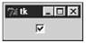In case you are wondering how to use the variables listed previously, take a look at the following line, and check out how we would have to write the code to use them. var is the name of a variable of your program. When you say variable=<your variable>, you are asking the widget to assign to your variables the values of onvalue and offvalue whenever your button is checked or unchecked, respectively.
Checkbutton(master, variable=var, indicatoron=0).pack()
Entry
The Entry widget is implemented by users to enter a single line of text in a frame or in a window widget.
The following code exemplifies the use of this widget by creating a single line interface in which you can type expressions:
from Tkinter import *
from math import *
def calc():
result = "= " + str(eval(expression.get()))
label.config(text = result)
root = Tk()
frame = Frame(root)
label = Label(frame)
entry = Entry(frame)
expression = StringVar()
entry["textvariable"] = expression
button = Button(frame, text = "=", command = calc)
frame.pack()
entry.pack()
label.pack(side=LEFT)
button.pack(side=RIGHT)
frame.mainloop()
Figure 15.5 shows how the output of this code looks.
Figure 15.5. The Entry widget being used to implement an expression evaluator.
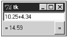This widget provides the textvariable attribute, which contains the value either entered by the user or to be displayed. The get() method can be used to access this value, as well.
Frame
The Frame widget is very important for the process of grouping and organizing other widgets in a somehow friendly way. It works like a container, which is responsible for arranging the position of other widgets. It uses rectangular areas in the screen to organize the layout and to provide padding of these widgets. A frame can also be used as a foundation class to implement complex widgets.
In the next example, we create two frames responsible for aligning the colored buttons in two distinct rows:
from Tkinter import * root = Tk() frame = Frame(root) frame.pack() bottomframe = Frame(root) bottomframe.pack(side=BOTTOM) redbutton = Button(frame, text="Red", fg="red") redbutton.pack(side=LEFT) greenbutton = Button(frame, text="Brown", fg="brown") greenbutton.pack(side=LEFT) bluebutton = Button(frame, text="Blue", fg="blue") bluebutton.pack(side=LEFT) blackbutton = Button(bottomframe, text="Black", fg="black") blackbutton.pack(side=BOTTOM) root.mainloop()
You can check the output of this function by looking at Figure 15.6.
Figure 15.6. This window uses two frames to organize the buttons.
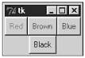Label
This widget implements a display box where you can place text or images. The text displayed by this widget can be updated at any time you want. It is also possible to underline part of the text (like to identify a keyboard shortcut), and span the text across multiple lines.
label = Label(root, bg="white", relief =RAISED, borderwidth=3) label.config(text="Whassup!")
If you want to easily manipulate the contents of a label widget when changing a single variable, use the textvariable option as demonstrated in the next example:
var = StringVar()
Label(root, textvariable=var).pack()
var.set("Hey!? How are you doing?")
Listbox
Using this widget, you create a list of text items that can be selected by the user. This list might contain several lines of information, and all lines must have the same properties. Depending on how the widget is configured (see the selectmode property in following list), the user is allowed to select multiple lines at the same time, which is very useful in many cases.
The Listbox widget implements the following properties:
height— Number of rows in the list. A value of 0 automatically resizes the widget to fit the largest option found. Setting the height to zero makes the listbox long enough to show all options at once.
selectmode— This option defines the type of list that you are creating. It can be either SINGLE, EXTENDED, MULTIPLE, or BROWSE.
width— Number of characters in each row. A value of 0 automatically resizes the widget to fit the largest option found.
The following methods are also provided:
delete(row [,lastrow])— Deletes the given row, or the rows between the given row and lastrow.
get(row)— Gets the string that starts at the given row.
insert(row, string)— Inserts the given string at the given row.
see(row)— Makes the given row visible for the user.
select_clear()— Clears the selection.
select_set(startrow, endrow)— Selects the rows starting at the startrow position and ending at the endrow position.
The following example demonstrates the use of a list box:
from Tkinter import *
root = Tk()
mylistbox = Listbox(root)
mylistbox.pack()
mylistbox.delete(0, END)
mylistbox.insert(END, "This is the row number 1")
for number in range(2,41):
mylistbox.insert(END, "This is the row number " + str(number))
root.mainloop()
In order to see all the lines from the previous list, you are required to hold down the mouse button while dragging down the selection. This process can be largely simplified by using a Scrollbox widget along with the Listbox widget. Also check out the example found at the Scrollbox widget section.
Menu
The goal of this widget is to allow us to create all kinds of menus that can be used by our applications. The core functionality provides ways to create three menu types: pop-up, toplevel, and pull-down. It is also possible to use other extended widgets to implement new types of menus, such as the OptionMenu widget, which implements a special type that generates a pop-up list of items within a selection. You can't put arbitrary widgets in a menu. However, there are special menu item types such as radio menu items and check menu items that provide similar behavior to the widgets by the same name.
The menu widget exposes the following methods:
add_command (options)— Adds a menu item to the menu.
add_radiobutton( options )— Creates a radio button menu item.
add_checkbutton( options )— Creates a check button menu item.
add_cascade(options)— Creates a new hierarchical menu by associating a given menu to a parent menu.
add_separator()— Adds a separator line to the menu.
add( type, options )— Adds a specific type of menu item to the menu.
delete( startindex [, endindex ])— Deletes the menu items ranging from startindex to endindex.
entryconfig( index, options )— Allows you to modify a menu item, which is identified by the index, and change its options.
index(item)— Returns the index number of the given menu item label.
The menu widget methods expose the following options:
accelerator— This is a keyboard alternative to the menu option that must be displayed as right justified next to the menu option. It's important to say here that this option doesn't automatically bind the given key to the option. You have to do it by yourself.
command— Name of the callback function that is called when the menu item is selected.
indicatorOn— Setting this option to true adds a switch next to the menu options. This small button allows an option to be toggled on and off.
label— This option defines the text of a menu item.
menu— This option is used by the add_cascade method to add a submenu (another Menu instance) to a menu.
selectColor— Switch's color. See the indicatorOn property.
state— Defines the menu item status. The possible values are normal, active, and disabled.
onvalue, offvalue— Values to be stored in the variable property. When the menu item is selected, the onvalue's value is copied to that property.
tearOff— By setting this option to true, a clickable separator is created in the top of the menu. Clicking on this separator, the menu item separates from the main menu, becoming part of a new window.
underline— Defines the index position of the character to be underlined.
value— The value of the attached radio button.
Now, let's get back to practice and learn how to design menus. The basic rules are simple. First, you need to instantiate the menu class and anchor it to its parent widget. Then, you just need to use one of the add methods to include items to it.
The next example shows how to create a pop-up menu. Note that we have to bind a mouse action to a callback function that launches the menu (see Figure 15.7).
Figure 15.7. This pop-up menu is activated by right-clicking.
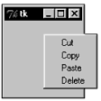
from Tkinter import *
def donothing():
filewin = Toplevel(root)
button = Button(filewin, text="Do nothing button")
button.pack()
root = Tk()
menu = Menu(root, tearoff=0)
menu.add_command(label="Cut", command=donothing)
menu.add_command(label="Copy", command=donothing)
menu.add_command(label="Paste", command=donothing)
menu.add_command(label="Delete", command=donothing)
frame = Frame(root, width=100, height=100)
frame.pack()
def popupmenu(event):
menu.post(event.x_root, event.y_root)
frame.bind("<Button-3>", popupmenu)
root.mainloop()
The next example demonstrates the creation and usage of a menu bar. This type of menu is placed on the top of toplevel windows (see Figure 15.8).
Figure 15.8. The menu bar is placed on top of a toplevel window.
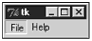
from Tkinter import *
def filemenu():
filewin = Toplevel(root)
fileclose = Button(filewin, text="Close Application")
fileclose.config(command=root.quit)
fileclose.pack()
root = Tk()
menubar = Menu(root)
menubar.add_command(label="File", command=filemenu)
menubar.add_command(label="Help")
root.config(menu=menubar)
root.mainloop()
This last example demonstrates how to create pull-down menus, which is a type of menu that is bound to a parent menu (see Figure 15.9).
Figure 15.9. This pull-down menu is bound to a parent menu.
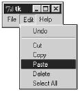
from Tkinter import *
def donothing():
filewin = Toplevel(root)
button = Button(filewin, text="Do nothing button")
button.pack()
root = Tk()
menubar = Menu(root)
filemenu = Menu(menubar, tearoff=0)
filemenu.add_command(label="New", command=donothing)
filemenu.add_command(label="Open", command=donothing)
filemenu.add_command(label="Save", command=donothing)
filemenu.add_command(label="Save as...", command=donothing)
filemenu.add_command(label="Close", command=donothing)
filemenu.add_separator()
filemenu.add_command(label="Exit", command=root.quit)
menubar.add_cascade(label="File", menu=filemenu)
editmenu = Menu(menubar, tearoff=0)
editmenu.add_command(label="Undo", command=donothing)
editmenu.add_separator()
editmenu.add_command(label="Cut", command=donothing)
editmenu.add_command(label="Copy", command=donothing)
editmenu.add_command(label="Paste", command=donothing)
editmenu.add_command(label="Delete", command=donothing)
editmenu.add_command(label="Select All", command=donothing)
menubar.add_cascade(label="Edit", menu=editmenu)
helpmenu = Menu(menubar, tearoff=0)
helpmenu.add_command(label="Help Index", command=donothing)
helpmenu.add_command(label="About...", command=donothing)
menubar.add_cascade(label="Help", menu=helpmenu)
root.config(menu=menubar)
root.mainloop()
Menubutton
This widget was primarily used to display toplevel, pop-up, and pull-down menus. However, you can now use the menu widget to obtain the same functionality.
Message
This widget provides a multiline and noneditable object that displays texts, automatically breaking lines and justifying their contents. Its functionality is very similar to the one provided by the Label widget, except that it can also automatically wrap the text, maintaining a given width or aspect ratio. The following example creates a simple Message widget instance:
from Tkinter import * txt = "This message demonstrates the usage of the Message Widget" root = Tk() msg = Message(root, text = txt) msg.pack() root.mainloop()
Figure 15.10 shows the output of this code.
Figure 15.10. A message displayed by the Message widget.
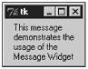Radiobutton
This widget implements a multiple-choice button, which is a way to offer many possible selections to the user, and let her choose only one of them.
In order to implement this functionality, each group of radiobuttons must be associated to the same variable, and each one of the buttons must symbolize a single value. You can use the Tab key to switch from one radionbutton to another.
The following properties are made available by this widget:
command— Function to be called when the button is clicked.
variable— Variable to be updated when the button is clicked.
value— This attribute defines the value that must be stored in the variable when the button is clicked.
The following methods are also provided by this widget:
flash()— Reverses and resets the foreground and background colors in order to cause a flashing effect.
invoke()— Executes the function defined in the command property.
select()— Selects the radio button, setting the variable to value.
The following example creates three radiobuttons and displays the selected option on the label widget (see Figure 15.11):
Figure 15.11. This window exemplifies the use of radiobuttons.
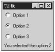
from Tkinter import *
def sel():
selection = "You selected the option " + str(var.get())
label.config(text = selection)
root = Tk()
var = IntVar()
Radiobutton(root, text="Option 1", variable=var, value=1,
command=sel).pack(anchor=W)
Radiobutton(root, text="Option 2", variable=var, value=2,
command=sel).pack(anchor=W)
Radiobutton(root, text="Option 3", variable=var, value=3,
command=sel).pack(anchor=W)
label = Label(root)
label.pack()
root.mainloop()
Check out the next example. Just by setting the indicatoron attribute to 0, we can change the visual design of our radio buttons (see Figure 15.12):
Figure 15.12. An alternative way to use radiobuttons.
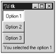
from Tkinter import *
def sel():
selection = "You selected the option " + str(var.get())
label.config(text = selection)
root = Tk()
var = IntVar()
r1 = Radiobutton(root, text="Option 1", variable=var, value=1, command=sel)
r2 = Radiobutton(root, text="Option 2", variable=var, value=2, command=sel)
r3 = Radiobutton(root, text="Option 3", variable=var, value=3, command=sel)
r1.config(indicatoron=0)
r2.config(indicatoron=0)
r3.config(indicatoron=0)
r1.pack(anchor=W)
r2.pack(anchor=W)
r3.pack(anchor=W)
label = Label(root)
label.pack()
root.mainloop()
Scale
The Scale widget provides a graphical slider object that allows you to select values from a specific scale. In order to get and set values to or from the object, you need to use the following methods:
get()— This method gets the current scale value.
set(value)— This method sets the scale to a specific value.
The following example demonstrates the use of this widget (see Figure 15.13).
Figure 15.13. Using a Scale widget to select values from a specific scale.
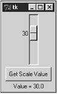
from Tkinter import *
def sel():
selection = "Value = " + str(var.get())
label.config(text = selection)
root = Tk()
var = DoubleVar()
scale = Scale(root, variable=var)
button = Button(root, text="Get Scale Value", command=sel)
label = Label(root)
scale.pack(anchor=CENTER)
button.pack(anchor=CENTER)
label.pack()
root.mainloop()
You could also implement the previous example using the Scale.get(), as demonstrated next.
from Tkinter import *
def sel():
label.config(text = scale.get())
root = Tk()
var = DoubleVar()
scale = Scale(root)
button = Button(root, text="Get Scale Value", command=sel)
label = Label(root)
scale.pack(anchor=CENTER)
button.pack(anchor=CENTER)
label.pack()
root.mainloop()
Scrollbar
This widget provides a slide controller that is used to implement vertical scrolled widgets, such as Listbox, Text, and Canvas. Note that you can also create horizontal scrollbars on Entry widgets.
This widget uses the command property to define the callback function that must be used to change the view in the widget.
Also, it implements the following two methods:
set(first, last)— Defines the fractions between 0 and 1 (representing the range 0%-100%) that delimits the current view.
get()— Returns the current scrollbar configuration settings.
The next example demonstrates how to link a vertical scrollbar to a Listbox widget. The steps are very simple. You first need to set the Listbox widget's yscrollcommand callback method to the set method of the scrollbar widget. Second, you need to set the scrollbar's command to the yview method of the Listbox widget. Every time the Listbox view is modified, the scrollbar's set method is called, and every time the scrollbar is changed, the Listbox's yview method is called, as well(see Figure 15.14).
Figure 15.14. Here, the Scrollbar widget implements a vertical scrollbar for a Listbox widget.
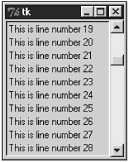
from Tkinter import *
root = Tk()
scrollbar = Scrollbar(root)
scrollbar.pack(side=RIGHT, fill=Y)
mylist = Listbox(root, yscrollcommand=scrollbar.set)
for line in range(100):
mylist.insert(END, "This is line number " + str(line))
mylist.pack(side=LEFT, fill=BOTH)
scrollbar.config(command=mylist.yview)
mainloop()
If you need to use a horizontal scrollbar instead of a vertical scrollbar, the process is very simple. All you have to do is change the orient option in the Scrollbar initialization call, and replace the yscrollcommand and yview with xscrollcommand and xview. The following example implements these changes, as you can see in Figure 15.15.
Figure 15.15. Here, the Scrollbar widget is used to implement a horizontal scrollbar for another Listbox widget.
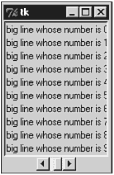
from Tkinter import *
root = Tk()
scrollbar = Scrollbar(root, orient=HORIZONTAL)
scrollbar.pack(side=BOTTOM, fill=X)
mylist = Listbox(root, xscrollcommand=scrollbar.set)
for line in range(100):
msg = "This is a very big line whose number is " + str(line)
mylist.insert(END, msg)
mylist.pack(side=LEFT, fill=BOTH)
scrollbar.config(command=mylist.xview)
mainloop()
Text
Text widgets provide advanced capabilities that allow you to edit a multiline text and format the way it has to be displayed, such as changing its color and font. You can also use elegant structures like tabs and marks to locate specific sections of the text, and apply changes to those areas. Moreover, you can embed windows and images in the text because this widget was designed to handle both plain and formatted text. if you need to split your text across multiple lines, you just have to insert (newline characters) at the position where you want to break the line.
Note
The main display area of the Grail Web browser used the Tk text widget.
The following attributes are exposed by Text widgets:
state— This attribute has two possible values: normal and disabled. The former is used to define standard editable text boxes that accept inserts and deletes, and the latter is used for noneditable text boxes.
tabs— This attribute provides a list of strings that identifies all the tab stops on the Text widget. Each list item is a concatenation of the index position of the tab stop and a justification sign (l, r, or c) that defines the justification of the tab (left, right, or center, respectively).
The following methods are exposed as well:
delete(startindex [,endindex])— This method deletes a specific character or a range of text.
get(startindex [,endindex])— This method returns a specific character or a range of text.
index(index)— Returns the absolute value of an index based on the given index.
insert(index [,string]...)— This method inserts strings at the specified index location. If you need to insert elements other than strings, such as windows or images, use the window_create and image_create methods, respectively.
see(index)— This method returns true if the text located at the index position is visible.
Text widgets support three distinct helper structures: Marks, Tabs, and Indexes.
Marks are used to bookmark positions between two characters within a given text. Note that you cannot recognize the marked positions visually: You need to use the variables. The fact of being able to store positions without compromising the visual design allows you to use as many marks as you need without causing problems to the users. Tkinter offers two preconfigured marks for you: INSERT and CURRENT. The first one defines the cursor's insertion position, and the other one defines the closest position to the mouse pointer. We have the following methods available when handling marks:
index(mark)— Returns the line and column location of a specific mark.
mark_gravity(mark [,gravity])— Returns the gravity of the given mark. If the second argument is provided, the gravity is set for the given mark. This defines where new text must be inserted if someone tries to insert the text exactly on the mark position.
mark_names()— Returns all marks from the Text widget.
mark_set(mark, index)— Informs a new position to the given mark.
mark_unset(mark)— Removes the given mark from the Text widget.
Tags are used to associate names to regions of text, which makes easy the task of modifying the display settings of specific text areas. Tags are also used to bind event callbacks to specific ranges of text. Tkinter provides a preconfigured tag called SEL that matches the current selection. Next, are the available methods for handling tabs:
tag_add(tagname, startindex[,endindex] ...)— This method tags either the position defined by startindex, or a range delimited by the positions startindex and endindex.
tag_config— You can use this method to configure the tag properties, which include, justify(center, left, or right), tabs(this property has the same functionality of the Text widget tabs's property), and underline(used to underline the tagged text).
tag_delete(tagname)— This method is used to delete and remove a given tag.
tag_remove(tagname [,startindex[.endindex]] ...)— After applying this method, the given tag is removed from the provided area without deleting the actual tag definition.
The following example uses tags to format specific regions on the Text widget. Note that we use row/column pairs to define the ranges that we want to manipulate.
from Tkinter import *
def onclick():
pass
root = Tk()
text = Text(root)
text.insert(INSERT, "Here, I start the text ...")
text.insert(END, "... and here, I finish it.")
text.pack()
text.tag_add("here", "1.0", "1.4")
text.tag_add("start", "1.8", "1.13")
text.tag_config("here", background="yellow", foreground="blue")
text.tag_config("start", background="black", foreground="green")
root.mainloop()
Indexes are used to point out the actual positions of characters, delimiting areas within a text.
The following index types are available: INSERT, CURRENT, END, line/column ("line.column"), line end ("line.end"), user-defined marks, user-defined tags ("tag.first", "tag.last"), selection (SEL_FIRST, SEL_LAST), window coordinate ("@x,y"), embedded object name (window, images), and expressions.
In order to demonstrate more uses of this widget, the next example inserts a Button widget right inside the text.
from Tkinter import *
def onclick():
pass
root = Tk()
text = Text(root)
text.insert(INSERT, "Here, I start the text ...")
button = Button(text, text="I am a button", command=onclick)
text.window_create(INSERT, window=button)
text.insert(END, "... and here, I finish it.")
text.pack()
root.mainloop()
Toplevel
Toplevel widgets work as windows that are directly managed by the window manager. They do not necessarily have a parent widget on top of them. Toplevels do support geometry management, as you can control where children of a toplevel are placed, but you don't need to pack the toplevel itself. Their behavior is similar to Frame's. The difference is that Toplevel widgets are displayed in a top-level, separated window.
This widget supports all the methods mentioned next. Also note that these methods are also supported by the root window, which is originated by the Tk() call. Not necessarily all functions will work on your window manager because each one of the available window managers in the market has its own type of support definitions.
deiconify()— Displays the window, after using either the iconify or the withdraw methods.
frame()— Returns a system-specific window identifier.
group(window)— Adds the window to the window group administered by the given window.
iconify()— Turns the window into an icon, without destroying it.
protocol(name, function)— Registers a function as a callback which will be called for the given protocol. See the Protocols topic, which is located some pages ahead.
state()— Returns the current state of the window. Possible values are normal, iconic, withdrawn, and icon.
transient([master])— Turns the window into a temporary(transient) window for the given master, or to the window's parent, when no argument is given. These windows are automatically hidden when the master window is iconified or withdrawn.
withdraw()— Removes the window from the screen, without destroying it.
The following methods can be used either to set or to retrieve a specific information to or from the method call. If you call them without passing any arguments, they simply return their current value or state. On the other hand, if you inform the arguments, the expected action is executed.
aspect(minNumer, minDenom, maxNumer, maxDenom)— Controls the relation between window's width and height (aspect ratio). The aspect ratio is limited to lay between minNumer/minDenom and maxNumer/maxDenom. If you omit the arguments, this method returns the current constraints as a 4-tuple.
client(name)— Used under the X window system to define the WM_CLIENT_MACHINE property. It is the application that sets the WM_* properties. The window manager can make use of these properties when managing the windows.
colormapwindows(wlist...)— Used under the X window system to define the WM_COLORMAP_WINDOWS property.
command(value)— Used under the X window system to define the WM_COMMAND property.
focusmodel(model)— Sets the focus model.
geometry(geometry)— Changes the windows geometry by using the following argument format: "widthxheight+xoffset+yoffset", showing the widget coordinates in pixels.
iconbitmap(bitmap)— Defines a monochrome icon bitmap to be used when the window gets iconified.
iconmask(bitmap)— Defines the icon bitmap mask to use when this window gets iconified.
iconname(newName=None)— Defines the icon name to be used when this window gets iconified.
iconposition(x, y)— Defines a suggestion for the icon position to be used when this window gets iconified.
iconwindow(window)— Defines the icon window that should be used as an icon when this window gets iconified.
maxsize(width, height)— Defines the maximum size for this window.
minsize(width, height)— Defines the minimum size for this window.
overrideredirect(flag)— Defines a flag different from 0 and tells the window manager to not add a title or borders to the window.
positionfrom(who)— Defines the position controller.
resizable(width, height)— Defines the resize flags, which control whether the window can be resized.
sizefrom(who)— Defines the size controller.
Image
This class is used as a foundation to display graphic objects, including bitmaps and GIF images. Two subclasses are inherited from this class: BitmapImage and PhotoImage.
In order to using the following syntax:
image = BitmapImage(options) or image = PhotoImage(options)
The following functions can be used for image handling:
image_names()— Returns a list containing the names of all existing images.
image_types()— Returns a list containing all the existing types that were created.
After a image object is created, it provides the following methods: image.type(), image.width(), and image.height(), which return the type, actual width, and actual height of the image, respectively.
BitmapImage
This subclass is used to display bitmap images on widgets, including buttons, canvas, labels, and text. They really mean bitmap for BitmapImage (not a multicolor image, which most Windows users think of because of the .BMP format). A bitmap image represents a two color image (or 2 colors + transparency if a mask is used).
The following methods are exposed by this subclass. Table 15.5 shows the available options for these methods.
cget(option)— Returns the value of the given option.
config(options), configure(options)— Changes the image options.
height(), width()— Returns the image dimension, in pixels.
PhotoImage
This subclass is used to display full-color images on widgets, including buttons, canvas, labels, and text.
The following attributes are exposed by this subclass:
data— String to be used instead of a file.
file— File to be read.
height, width— Requested dimensions for the image.
This subclass offers native support to GIF and PPM files. In order to add an image to a widget, just implement the principle established by the following code:
from Tkinter import * root = Tk() frame = Frame(root) myimage = PhotoImage(file="new.gif") b = Button(root) b.config(image= myimage) # or b.image = myimage frame.pack() b.pack() root.mainloop()
General Widget Methods
Next, I list some of the methods inherited from the base Tk classes that are provided for all Tkinter widgets, which also includes the toplevel object that is generated by the Tk() method.
The following methods always apply to the widget object that makes the method call. To demonstrate it, the next code lines create a label widget, and use the config method to set the value of the text attribute for the label widget that we have just created.
lb = Label(root) lb.config(text= "Hello Python World")
Now, let's see the available methods:
cget(option)— Returns a string that contains the current configuration value for the given option.
config(options), configure(options)— Sets the values for one or more options. When used without arguments, it returns a dictionary containing the current settings for all widget options.
destroy()— Destroys the widget, removing it from its namespace.
focus(), focus_set()— Sets the keyboard focus to the widget.
focus_displayof()— Returns the name of the window that contains the widget and has the focus.
focus_force()— Enforces the keyboard focus to the widget.
focus_get()— Returns the identity of the window with focus.
focus_lastfor()— Returns the identity of the most recent window to receive the input focus.
getvar(variable)— Returns the value of the provided Tkinter variable name.
grab_set()— Grabs all events for the current application to the widget.
grab_current()— Returns the identity of the widget that has set the grab functionality in the current application.
grab_release()— Releases the grab on the widget.
grab_set_global()— Grabs all events for the entire screen to the widget.
grab_status()— Returns None, local, or global, depending whether there is no grab set on window, a local grab is set, or a global grab is set, respectively.
keys()— Returns all the options available for this widget in a tuple format. In order to obtain the value of each one of these options, you can use the cget method.
lift([object]), tkraise([object])— Moves the widget to the top of the window stack, or if an object (a widget or a window) is provided, the widget is placed right above the informed object.
lower([object])— Moves the widget to the bottom of the window stack, or if an object (a widget or a window) is provided, the widget is placed right below the informed object.
mainloop()— Activates the main event loop.
quit()— Quits the main event loop.
setvar(variablename, value)— Sets a value to the given Tkinter variable name.
update()— Processes all pending tasks, such as geometry management and widgets redrawing. Be careful when using this method.
update_idletasks()— Processes all pending idle tasks.
tk_focusNext()— Returns the next widget that should have the keyboard focus.
tk_focusPrev()— Returns the previous widget that should have the keyboard focus.
wait_variable(variable)— Creates a local event that waits for the given Tkinter variable to change. This loop doesn't affect the application's mainloop.
wait_visibility(widget)— Creates a local event that waits for the given widget to become visible. This loop doesn't affect the application's mainloop.
wait_window(widget)— Creates a local event that waits for the given widget to be destroyed. This loop doesn't affect the application's mainloop.
winfo (Widget Information) Methods
This set of methods provides specific functionality for the windowing widgets.
winfo_cells()— Returns the number of cells in the widget's color map.
winfo_children()— Returns a list of widget instances for all the widget's children.
winfo_class()— Returns the Tkinter widget class name for the widget.
winfo_colormapfull()— Returns true if the widget's color map is full.
winfo_containing(xcoord, ycoord)— Returns the identity of the widget located at the given coordinate (relative to the upper left corner of the root window).
winfo_depth()— Returns the bit depth (8, 16, 24, or 32 bits per pixel) used to display the widget.
winfo_exists()— Returns true if a Tk window corresponds to the given widget.
winfo_fpixels(number)— Returns a floating point value, which is the result of the conversion of the given distance to the corresponding number of pixels.
winfo_geometry()— Returns a string in the format "widthxheight+xoffset+yoffset", showing the widget coordinates in pixels.
winfo_height(), winfo_width()— Return the widget's height and width, in pixels.
winfo_id()— Returns an integer that contains a platform-specific window identity corresponding to the given widget. On UNIX systems, this is the X window identifier; on Windows systems, this is the Window HWND; and on Macs, it is a non-useful value.
winfo_ismapped()— Returns true if the widget is currently mapped by the underlying window system.
winfo_manager()— Returns the name of the geometry manager that has been used to organize the widget.
winfo_name()— Returns the widget's name.
winfo_parent()— Returns the name of the widget's parent, or an empty string in case the widget doesn't have a parent widget/window.
winfo_pathname(widget_id)— Returns the pathname of the widget whose identity is given as the argument.
winfo_pixels(number)— Returns an integer value, which is the result of the conversion of the given distance to the corresponding number of pixels.
winfo_pointerx()— Returns the x coordinate of the mouse pointer (in pixels) when it is on the same screen of the widget.
winfo_pointerxy()— Returns a tuple of the x and y coordinates of the mouse pointer (in pixels) when it is on the same screen of the widget.
winfo_pointery()— Returns the y coordinate of the mouse pointer (in pixels) when it is on the same screen of the widget.
winfo_reqheight(), winfo_reqwidth()— Return the minimal height and width required by the widget in order to be entirely displayed.
winfo_rootx(), winfo_rooty()— Return the pixel coordinates (integer values) corresponding to the widget's upper left corner, relative to the upper left corner of root's window border.
winfo_screen()— Returns the screen name for the current window in the format display.screen. Note that it doesn't provide any useful information on non-X versions of Tk.
winfo_screencells()— Returns the number of cells in the default color map for widget's screen.
winfo_screendepth()— Returns the bit depth of the window widget.
winfo_screenheight(), winfo_screenwidth()— Returns the height and the width of the widget's screen, in pixels.
winfo_screenmmheight(), winfo_screenmmwidth()— Returns the height and the width of the widget's screen, in millimeters.
winfo_screenvisual()— Returns the default visual class used for widget's screen. Possible values include pseudocolor, directcolor, staticcolor, truecolor, grayscale, and staticgray.
winfo_toplevel()— Returns a widget instance of the top-level window containing the widget.
winfo_visual()— Returns the visual class used for the widget. Possible values include pseudocolor, directcolor, staticcolor, truecolor, grayscale, and staticgray.
winfo_x(), winfo_y()— Return the pixel coordinates (integer values) corresponding to the widget's upper left corner, relative to the upper left corner of its parent's window border.
| Last updated on 1/30/2002 Python Developer's Handbook, © 2002 Sams Publishing |
| < BACK | Make Note | Bookmark | CONTINUE > |